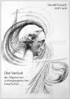
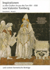

Die deutsche Version dieser Homepage finden Sie unter fhab.de Die deutsche Version dieser Homepage finden Sie unter fhab.de |
| |
|
Webshop
The Anthroposophical-Hermetic publisher’s outlet specializing in the works of Valentin Tomberg und Willi Seiß!
About the ACHAMOTH Press
The Achamoth Press was founded by Willy Seiß for the express purpose of publishing the works of Valentin Tomberg. Tomberg’s writings and lectures are based on Rudolf Steiner’s Spiritual Science and seek to deepen the content and implications of R. Steiner’s Christology.
The Achamoth Press also publishes other authors that reference Valentin Tomberg and/or Rudolf Steiner’s life work. The list includes Willy Seiß, who in writings and lectures sought to rehabilitate Tomberg’s name and place his work in its well-earned Spiritual-Scientific context.
Willy Seiß’s Chakra-Work, a loose-leaf series presently composed of 37 twenty-page instalments, builds an important part of the collection. The series deepens Rudolf Steiner’s Anthroposophical-Rosecrutian path of inner development through an exploration of the Chakras from an Esoteric-Christian perspective.
- Publisher prospectus (in german) Download (PDF, 171 kB)
- Order List (in german) Download (PDF, 63 kB)
H. Giersch, W. Seiß

Anthroposophischen Gesellschaft
Harald Giersch, Willi Seiß
Gebundene Ausgabe:
104 Seiten (Kartoniert)
Verlag: Achamoth
(April 2007)
Sprache: Deutsch
ISBN-10: 3923302258
ISBN-13: 978-3923302253
Teil I: „Die Geschehnisse, die den Verfall der Anthroposophischen Gesellschaft bestimmten“
Teil II: „Tragische Ereignisse um die Weihnachts- tagung der Allgemeinen Anthroposophischen Gesellschaft“
Valentin Tomberg

Inspirationen zu den GroßenArcana des Taro XIV-XXII
von Valentin Tomberg
(französisch - deutsch)
und weitere hermetische
Beiträge
Valentin Tomberg
Herausgeber: Willi Seiß und Catharina Barker
Gebundene Ausgabe: 140 Seiten (Kartoniert)
Verlag: Achamoth (2007)
Sprache: Deutsch
ISBN-10:
ISBN-13: 978-3923302260